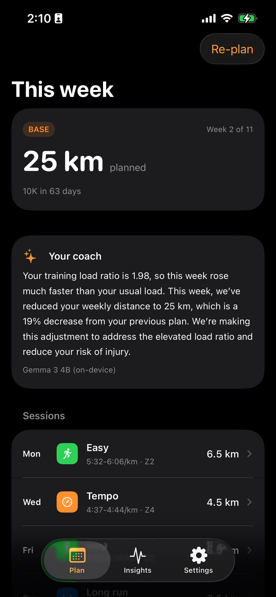
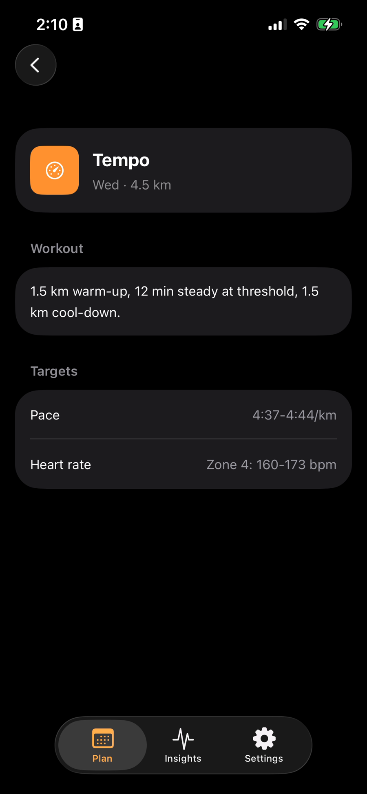
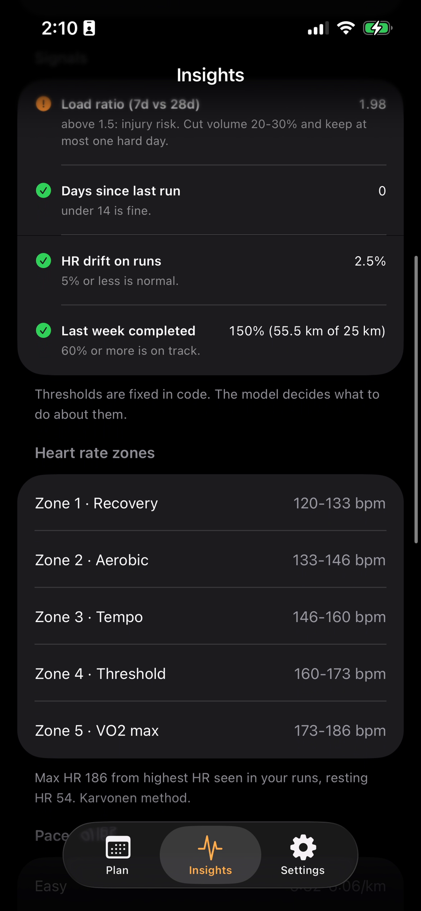
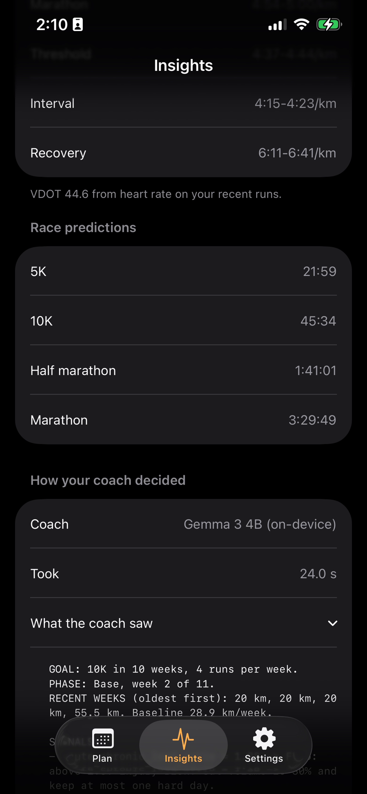

A running coach that reads your body.
OpenStride reads your runs and heart rate from Apple Health, works out your zones and training load, and plans each week. The coach is Gemma 3 4B, an open-weight model running on the iPhone, so your health data stays on the phone.
What it looks like
A sample runner who doubled their mileage last week. The coach sees a load ratio of 1.98, cuts volume and keeps one hard day.




How it works
Small models are bad at arithmetic and good at reading a situation. So the math lives in code and the judgment lives in the model.
Measure
HR zones (Karvonen), VDOT pace zones, training load, HR drift, last week's completion.
Draft
A plan engine builds the week: phase, volume, long run, quality sessions.
Decide
Gemma reads OK/FLAG signals and picks adjustments from a small action set.
Guard
Rules override anything unsafe. No flag means the draft stands.
Explain
Gemma writes the note from facts about the final plan, so it always matches.
How it is tested
Six synthetic runners, each with an expected coach behavior, run 3 times per model. On-device rows use the same 4-bit MLX weights the iPhone downloads; times on an M2 Pro.
| Coach | Final plan right | Model right on its own | Note matches plan | Time |
|---|---|---|---|---|
| Gemma 3 4B, on-device (MLX) | 100% | 100% | 100% | 8.0 s |
| Gemma 3 4B, Ollama | 100% | 100% | 100% | 4.8 s |
| Gemma 3 1B, on-device (MLX) | 100% | 33% | 100% | 4.3 s |
| Rules only | 100% | 100% | 100% | 0 s |
Plus 21 unit tests, a simulator UI test that writes a sample runner into Apple Health and reads it back through the real HealthKit path, and a device UI test on a real iPhone.
Why open weights
Private by design
Heart rate and VO2 max are health data. With the model on the phone, the app has no server to send them to.
No per-user cost
Every plan runs on the phone's GPU. No API bill means it can be a one-time purchase.
Works on the trail
After a one-time 2.6 GB download, planning works with no signal.
Inspectable and swappable
The same weights run on a Mac, in the simulator and on the phone, so they can be tested, and a newer Gemma can drop in.